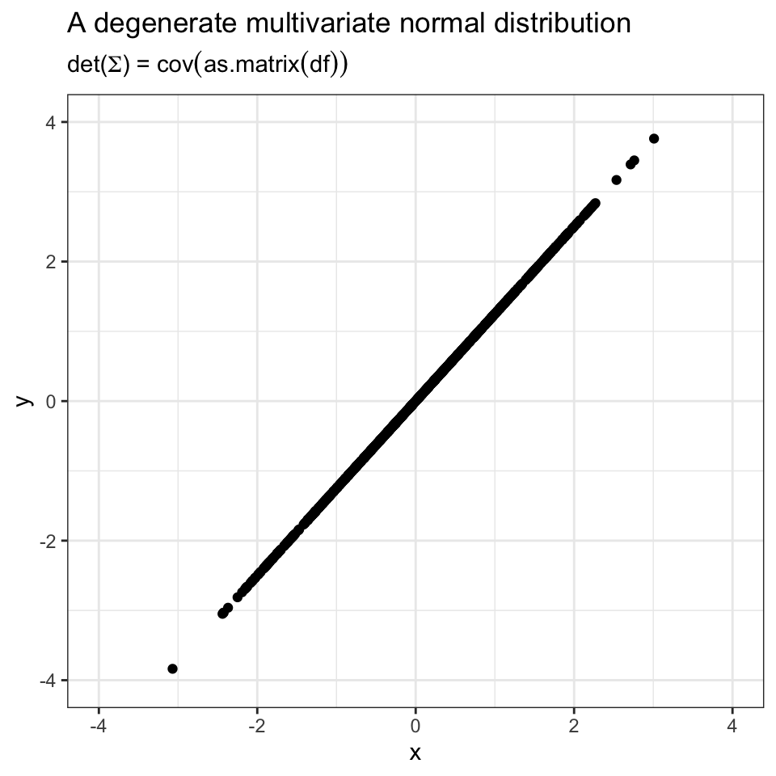

Week 10
\(L_p\) Spaces
\(L^p\) spaces are nice classes of functions that come up a lot.
For \(p \geq 1\), the \(L^p\) norm of a random variable is \((\mathbb{E}|X|^p)^{1/p}.\)
Examples:
- The \(L^1\) norm is simply \(\mathbb{E}|X|\).
- If \(\mathbb{E}X = 0\) then the \(L^2\) norm is \((\mathbb{E}|X|^2)^{1/2} = \sqrt{\text{Var}(X)}.\)
The set of random variables \(X\) such that \((\mathbb{E}|X|^p)^{1/p} < \infty\) is denoted \(L^p\).
That is, \(X \in L^p\) means that \((\mathbb{E}|X|^p)^{1/p} < \infty\).
Note that \((\mathbb{E}|X|^p)^{1/p} < \infty\) iff \(\mathbb{E}|X|^p < \infty.\) The purpose of the \(1/p\) is that it makes it have the properties of a norm.
In other settings, we talk about the \(L^p\) norm on functions. If \(f : \mathbb{R}\to \mathbb{R}\), then we would write that
\[||f||_1 = \int_{-\infty}^\infty |f(x)| \mathrm dx.\]
And \(L^1\) is the set of all functions such that \(||f||_1 < \infty\).
For \(L^p\) in general is given by the functions such that
\[(\int_{-\infty}^\infty |f(x)|^p \mathrm dx)^{1/p} < \infty.\]
It’s worth noting that since we’re defining norms, we can think about how we’re creating norms on three different things: * Vectors * Functions * Random variables
Properties that are required for a norm:
- Nonnegativity
- Triangle inequality
- Positive definiteness (zero on zero) (?)
Hölder’s Inequality
For any random variables \(X\) and \(Y\), if \(p,q > 1\) such that
\[\frac{1}{p} + \frac{1}{q} = 1\]
then
\[\mathbb{E}|XY| \leq (\mathbb{E}| X|^p)^{1/p} (\mathbb{E}|Y|^q)^{1/q}.\]
Proof
By the weighted AM-GM inequality with \(n = 2\), with \(w_1 = 1/p\) and \(w_2 = 1/q\),
\[\frac{1}{q} \frac{|X|^q}{\mathbb{E}|X|^q} + \frac{1}{q} \frac{|Y|^q}{\mathbb{E}|Y|^q} \geq \frac{\mathbb{E}|XY|}{(\mathbb{E}|X|^p)^{1/p} (\mathbb{E}|Y|^q)^{1/q}}. \]
Corollaries of Hölder
Cauchy-Schwarz
The Cauchy-Schwarz inequality is an important special case of Hölder’s inequality.
For any random variables \(X\) and \(Y\),
\[E|XY| \leq (\mathbb{E}|X|^2)^{1/2} (\mathbb{E}|Y|^2)^{1/2}.\]
Proof: Apply Hölder’s inequality with \(p = q = 2\).
Lyapunov’s inequality
If \(1 \leq r < s < \infty\), then
\[(E|X|^r)^{1/r} \leq (\mathbb{E}|X|^s)^{1/s}.\]
Thus if \(X \in L^s\) then \(X \in L^r\) for all \(r \in [1,s)\).
Proof: Apply Hölder’s inequality to the random variables \(|X|^r\) and \(Y=1\) with \(p = s/r\) (and \(q = 1/(1-1/p)\)) to get
\[\mathbb{E}|X|^r \leq (\mathbb{E}|X|^{rp})^{1/p} = (\mathbb{E}|X|^s)^{r/s}.\]
Raising both sides to the power of \(1/r\) yields the result.
Covariance Inequality
If \(X\) and \(Y\) have means \(\mu_X, \mu_Y\) and variances \(\sigma_X^2, \sigma_Y^2\), then
\[|\text{Cov}(X,Y)| \leq \sigma_X \sigma_Y. \]
\[ \begin{aligned} |\text{Cov}(X,Y)| & = |\mathbb{E}(X - \mu_X)(Y - \mu_Y)| \\ & \leq |\mathbb{E}(X-\mu_X)(Y-\mu_Y)| \quad \tiny \text{by Jensen's inequality, since }|\cdot|\text{ is convex} \\ & \leq (\mathbb{E}|X-\mu_X|^2)^{1/2} (\mathbb{E}|Y-\mu_Y|^2)^{1/2} \\ & = (\sigma_X^2){1/2} (\sigma_Y^2)^{1/2} \\ & = \sigma_X \sigma_Y \end{aligned} \]
This shows that \(-1 \leq \rho_{X,Y} \leq 1\) where \(\rho_{X,Y} = \frac{\text{Cov}(X,Y)}{\sigma_X \sigma_Y}\).
Minkowski’s Inequality
For any random variables \(X\) and \(Y\) and any \(p \geq 1\),
\[(\mathbb{E}|X + Y|^p)^{1/p} \leq (\mathbb{E}|X|^p)^{1/p} + (\mathbb{E}|Y|^p)^{1/p}.\]
Proof is in Casella & Berger, Theorem 4.7.5.
Minkowski’s inequality establishes the triangle inequality for \(L^p\) norms.
Recap / Morals of Inequalities
Boole’s Inequality: if you’re trying to show something has small probability of happening, and it can happen a few ways each of which are bounded by small probability. Useful for bounding something close to zero.
Markov’s inequality: comes up a lot, whenever you’re trying to establish an upper bound on large probabilities — often good to try applying Markov’s first. E.g., showing some errors or something is converging to zero — then we want to show the probability that the error is big, is small.
Chebyshev’s inequality and Hoeffding’s inequality are kind of the same sort of thing. Usually what these are used for is situations like if \(X\) is the sample mean, then we can say that the sample mean is close to whatever it’s converging to with high probability. E.g., to show the law of large numbers.
Chernoff’s bound: again, same thing.
Hoeffding’s: again, the sample mean is converging to the mean.
Jensen’s inequality: Whenever you have a bound involving an expectation and it needs to be manipulated in some way, sometimes it’s easier to put the function on the inside of the expectation, and sometimes it’s easier to put it on the outside of the expectation depending on the problem. So it’s useful for both establishing an upper bound or a lower bound depending on whether putting a convex function on the inside or outside of the expectation is easier.
Inequalities due to Jensen’s inequality with moments, and the inequalities with \(\log\) terms are especially useful.
Weighted AM-GM is not super common, but when it does show up, it’s super nice. As we saw, useful in the proof of Hölder’s inequality.
Hölder’s and Cauchy-Schwarz are for when we have products of variables.
Multivariate Normal Distributions
The multivariate normal (or multivariate Gaussian) family is a generalization of the univariate normal to random vectors.
It is, without a doubt, the most important family of distributions in probability and statistics.
Central Limit Theorem:
- CLT: The sum of a large number of independent random variables is approximately normal. (Generalizes to the sum of random vectors being multivariate normal)
- Consequently, many real-world quantities tend to be normallly distributed.
- When designing models, the CLT helps us understand when a normal model would be appropriate.
Multivariate normal distributions have quite nice analytic tractability:
- Calculations can often be done in closed form, making normal models computationally convenient.
- Normal distributions can be combined to build complex models that are still tractable.
A random vector \(X = (X_1, ..., X_k)^T\) is multivariate normal if \(a^T X\) (the dot-product of \(a\) and \(X\)) is univariate normal for all \(a \in \mathbb{R}^k\).
We consider the univariate normal family to include the degenerate case \(\mathcal N(\mu,0)\), defined as the point mass at \(\mu\).
Multivariate normals are determined by two parameters:
- The mean \(\mu\) which may be any vector in \(\mathbb{R}^k\), and
- The covariance \(\sigma\) which may be any \(k \times k\) real symmetric positive semi-definite matrix. (Recall semi-definiteness: \(v^T \Sigma v \geq 0 \, \forall v \in \mathbb{R}^k\).)
We write that \(X \sim \mathcal N(\mu, \Sigma)\) to denote \(X\) is multivariate normal with \(\mathbb{E}X = \mu\) and \(\text{Cov}(X) = \Sigma\).
It is possible that \(\Sigma\) might not be invertible, in which case it has no density and the pdf does not exist.
If \(\Sigma\) is an invertible matrix, then the pdf of \(X \sim \mathcal N(\mu, \Sigma)\) is
\[\mathcal N(x \mid \mu, \Sigma) = \frac{1}{(2 \pi )^{k/2} | \det (\Sigma) |^{1/2}} \exp \left( -\frac{1}{2} (x-\mu)^T \Sigma^{-1} (x-\mu) \right)\]
for all \(x \in \mathbb{R}^k\). Here \(\det (\Sigma)\) denotes the determinant of \(\Sigma\).
Though it’s formally obvious why \(\Sigma\) needs to be invertible, but is there more intuition to be had as to why it needs to be invertible?
If \(\Sigma\) were not invertible, then there would be nonzero vectors \(a\) such that \(a^T X = 0\).
This would mean that \(X\) lives in a (strict) subspace. In 2D this is like saying that the distribution lives on a line. Hence it occupies a measure zero space.
In 2D, it’s like saying the “area” the distribution occupies is zero.
In 3D, it’s like saying the “volume” the distribution occupies is zero.
\(\mathcal N(0,I)\) denotes the standard multivariate normal distribution.
Eigendecomposition of \(\Sigma\)
Let \(\Sigma\) be any real symmetric positive semi-definite matrix.
The eigendecomposition of \(\Sigma\) is the factorization \(\Sigma = U D U^T\), where
- \(U \in \mathbb{R}^{k \times k}\) is orthogonal, that is, \(U^TU = UU^T = I\) and
- \(D = \text{diag}(d_{11}, ..., d_{kk})\) where \(d_{11} \geq d_{22} \geq \cdots \geq d_{kk} \geq 0\), i.e., \(D\) is diagonal with nonnegative diagonal entries in decreasing order.
What is the geometric interpretation of positive semi-definiteness?
Essentially it’s that the function \(f(a) = a^T \Sigma a\) is upward parabolically shaped in a 2D setting.

The columns of \(U\) are called the eigenvectors, and the diagonal entries of \(D\) are the corresponding eigenvalues.
Writing \(U = [ u_1 \cdots u_k]\) yields the usual \(\Sigma u_i = d_{ii} u_i\) property:
\[\left[ \Sigma u_1 \cdots \Sigma u_k \right] = \Sigma U = U D U^T U = U D = \left[ d_{11} u_1 \cdots d_{kk} u_k \right].\]
An equivalent definition of positive semidefiniteness is saying that the eigenvalues are nonnegative for a real symmetric matrix.
Also note that we can write these in matrix notation as
\[D = \begin{bmatrix} d_{11} & 0 & 0 & \cdots \\ 0 & d_{22} & 0 & \cdots \\ 0 & 0 & \ddots & 0 \\ \vdots & & 0 & d_{kk} \end{bmatrix}, \quad \quad U = \begin{bmatrix} \rule[-1ex]{0.5pt}{2.5ex} & & \rule[-1ex]{0.5pt}{2.5ex} \\ u_1 & \cdots & u_k \\ \rule[-1ex]{0.5pt}{2.5ex} & & \rule[-1ex]{0.5pt}{2.5ex} \end{bmatrix}.\]
When we say a matrix is orthogonal, that means that all of the columns are orthogonormal. (Two columns are orthonormal if they are orthogonal and have norm 1).
Affine Transformation Property
If \(X \sim \mathcal N(\mu, \Sigma)\) is \(k\)-dimensional, then
\[AX + b \sim \mathcal N(A \mu + b, A\Sigma A^T)\]
for all \(A \in \mathbb{R}^{k \times k}\) and \(b \in \mathbb{R}^m\).
\[ \mathbb{E}(AX + b) = A \mathbb{E}X + b = A \mu + b \]
\[ \begin{aligned} \text{Cov}(AX + b) = \text{Cov}(AX) & = A \text{Cov}(X) A^T \\ & = A \Sigma A^T \end{aligned}\]
Examples:
If \(Z \sim \mathcal N(0, I)\), then \(U D^{1/2} Z + \mu \sim \mathcal N(\mu,\Sigma )\).
If \(X \sim \mathcal N(\mu, I)\) then \(D^{-1/2} U^T (X-\mu) \sim \mathcal N(0, I)\).
Any permutation of the numbers 1,…,k can be represented by a binary matrix \(\Pi \in \{0, 1 \}^{k \times k}\) that has a single 1 in row and column. If \(X \sim \mathcal N(\mu, \Sigma)\) then \(\Pi X \sim \mathcal N(\Pi \mu, \Pi \Sigma \Pi^T)\).
\[A = UD^{1/2} \quad \quad b = \mu\]
\[UD^{1/2} Z + \mu \sim \mathcal N(A \cdot 0 + \mu, A I A^T)\] \[ = \mathcal N(\mu, U D^{1/2} D^{1/2 T} U^T)\] \[ = \mathcal N(\mu, U D U^T)\] \[ = \mathcal N(\mu, \Sigma)\]
Precision Matrix
The precision matrix is given by \(\Sigma^{-1}\), often denoted \(\Lambda\).
In terms of \(\mu\) and \(\Lambda = \Sigma^{-1}\), the pdf of a multivariate normal distribution is given by
\[\mathcal N(x \mid \mu, \Lambda^{-1}) = \frac{|\det (\Lambda)|^{1/2}}{(2\pi)^{k/2}} \exp \left( - \frac{1}{2} (x-\mu)^\mathtt{T} \Lambda (x-\mu) \right).\]
If \(\Sigma = UDU^{\mathtt{T}}\) is the eigendecomposition, and \(\Sigma^{-1}\) exists, then \[\Sigma^{-1} = UD^{-1}U^\mathtt{T}.\]
Given \(D\), it is easy to compute \(D^{-1}\) since it is simply \[D^{-1} = \text{diag}(1/d_{11}, ..., 1/d_{kk}).\]
Independence and Covariance
We write \(X \perp\!\!\!\perp Y\) to denote that \(X\) and \(Y\) are independent, i.e. that \(X \perp\!\!\!\perp Y \Leftrightarrow f(X,Y) = f(X)f(Y).\)$
Similarly, we write \(X \perp\!\!\!\perp Y \mid Z\) to indicate that \[f(X,Y \mid Z) = f(x \mid z)f(Y \mid Z).\]
Just note that \(f\) will accordingly need to be either a probability mass or probability density function depending on the random variables, and whereas it represents a bivariate function on the left hand side, the right hand side represents (either unconditional or conditional) marginal functions.
Suppose that \(X \sim \mathcal N(\mu,\Sigma)\). Then \(\Sigma_{ij} = 0\) if and only if \(X_i \perp\!\!\!\perp X_{j}\).
Thus uncorrelated multivariate normal random variables are independent. This does not necessarily hold for other distributions.
Why does this hold?
We can carry out a variable transformation where we multiply \(X\) by \(A\) to reduce it from a random vector of \(k\) random variables to only two and see that the pdf factors.
Let \[A = \begin{bmatrix} 0 & \cdots & 0 & 1 & \cdots & 0 \\ 0 & \cdots & 0 & 0 & 1 & \cdots \end{bmatrix} \quad \text{ so that } A X = \begin{bmatrix} X_i \\ X_j \end{bmatrix}.\]
Then
\[\begin{aligned}A X & \sim \mathcal N(A \mu, A \Sigma A^\mathtt{T}) \\ & = \mathcal N\left( \begin{bmatrix} \mu_i \\ mu_j \end{bmatrix}, \begin{bmatrix} \Sigma_{ii} & \Sigma_{ij} \\ \Sigma_{ji} & \Sigma_{jj} \end{bmatrix} \right). \end{aligned} \]
Working out the matrix arithmetic, this pdf factors a product, showing that \[(X_1, X_2)^\mathtt{T} \sim \mathcal N(\mu_1, \Sigma_{ii}) \mathcal N(\mu_2, \Sigma_{jj}).\]
Transformation to Chi-Squared
Confidence sets are often constructed using the following fact:
If \(Z \sim \mathcal N(0, I_k)\), then \(Z^\mathtt{T} Z \sim \mathcal \chi^2 (k)\).
Proof: \(\sum_{i=1}^k Z_i^2 \sim \chi^2(k)\) since \(Z_i \sim \mathcal N(0, 1)\) independently.
If \(X \sim \mathcal N(\mu, \Sigma)\) and \(\Sigma^{-1}\) exist, then \[(X - \mu)^\mathtt{T} \Sigma^{-1} (X-\mu) \sim \chi^2(k).\]
The crux of the idea is to use that we can break up \(D^{-1}\) into two pieces and \(D^{-1/2} = D^{-1/2 \mathtt{T}}.\)
\[(X - \mu) U D^{-1/2} D^{-1/2 \mathtt{T}} U^T (X - \mu) = (X-\mu) \Sigma^{-1/2} \Sigma^{1/2} (X-\mu),\]
where \(U D^{1/2} Z + \mu = X\) and \(Z = D^{-1/2 \mathtt{T}} U^\mathtt{T}(X - \mu)\). Thus now the expression given is \(Z^T Z\).
Normality of Marginal and Conditional Distributions
Multivariate normal distributions are still multivariate normals after marginalizing and conditioning.
If \(X\) is multivariate normal, then any subset of its entries are multivariate normal.
If \(X\) is multivariate normal, then the conditional distribution of any subset of entries given any other subset of entries is multivariate normal.
To state these results more precisely, we partition \(X\) into two subsets of entries as follows:
\[X = \begin{bmatrix} X_a \\ X_b \end{bmatrix}.\]
Let \(X \sim \mathcal N(\mu, \Sigma)\) be \(k\)-dimensional, and suppose
\[X = \begin{bmatrix} X_a \\ X_b \end{bmatrix}, \quad \mu = \begin{bmatrix} \mu_a \\ \mu_b \end{bmatrix}, \quad \Sigma = \begin{bmatrix} \Sigma_{aa} & \Sigma_{ab} \\ \Sigma_{ba} & \Sigma_{bb} \end{bmatrix}\]
where \(X_a\) and \(X_b\) are \(l\) and \(m\) dimensional, respectively.
The marginal distributions of \(X_a\) and \(X_b\) are
\[X_a \sim \mathcal N(\mu_a, \Sigma_{aa}) \quad \text{ and }\quad X_b \sim \mathcal N(\mu_b, \Sigma_{bb}).\]
Proof: Let \(A = [I_{l \times l} 0_{l \times m}]\), that is \(A\) is the \(l \times k\) matrix with the \(l \times l\) identity in the first block and the rest zeroes. Then \[X_a = AX \sim \mathcal N(A \mu, A \Sigma A^\mathtt{T}) = \mathcal N(\mu_a, \Sigma_{aa}).\]
The case of \(X_b\) is similar, but with \(B = [0_{m \times l} I_{m \times m}]\).
The conditional distribution of \(X_a\) given \(X_b = x_b\) is
\[X_a \mid X_b = x_b \sim \mathcal N(\mu_{a|b}, \Sigma_{a|b}),\]
where \[\mu_{a|b} = \mu_a + \Sigma_{ab}\Sigma^{-1}_{bb}(x_b - \mu_b)\] \[\Sigma_{a|b} = \Sigma_{aa} - \Sigma_{ab}\Sigma_{bb}^{-1}\Sigma_{ba}.\]
Interestingly, note that \(\Sigma_{a|b}\) does not depend on \(x_b\).
Deriving this formula is instructive, but to derive it we will need to take two excursions to learn about proportionality, and inversion of \(2 \times 2\) block matrices.